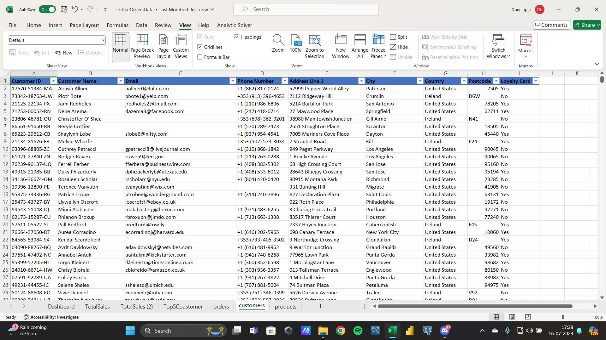
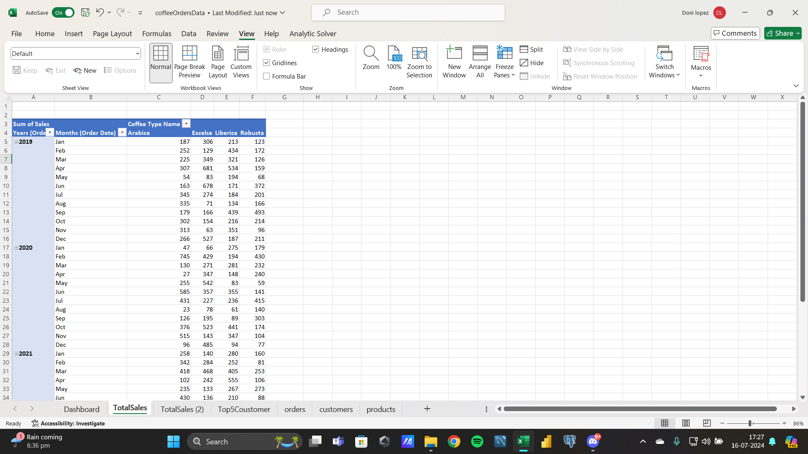
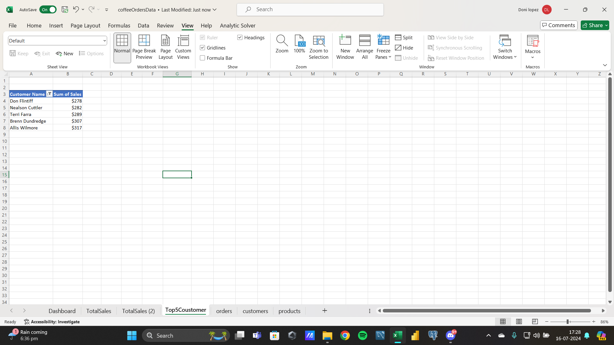
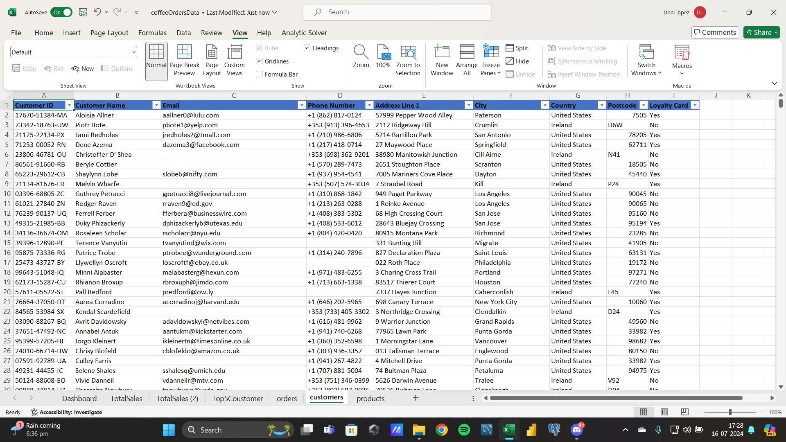
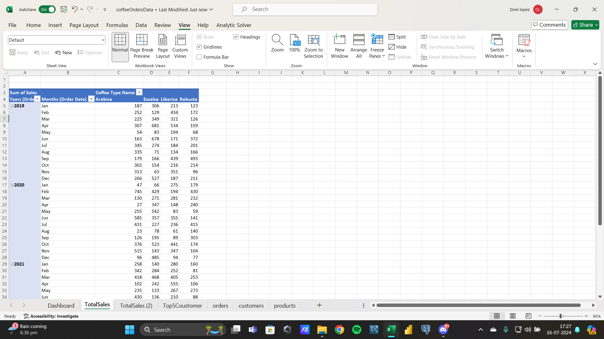
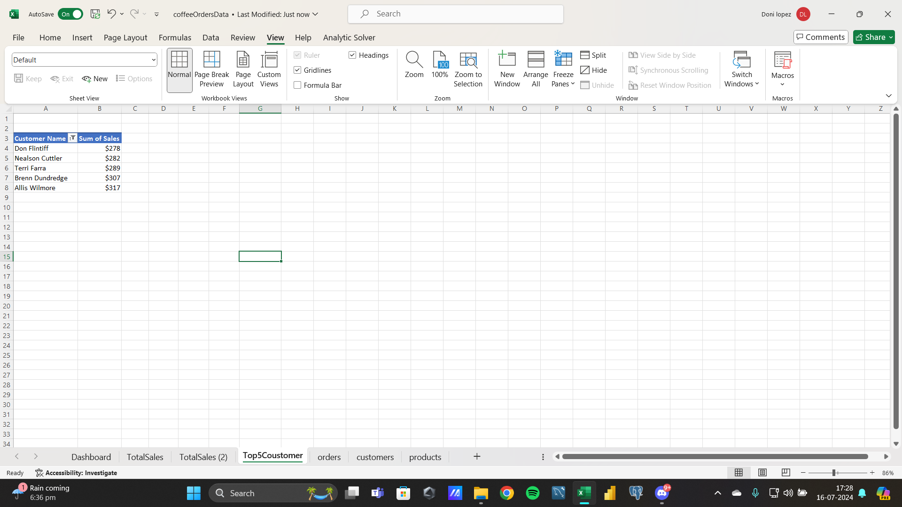
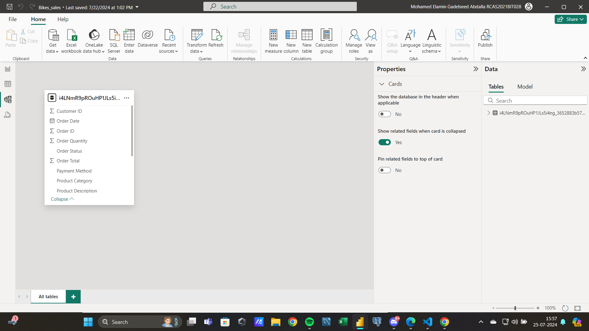
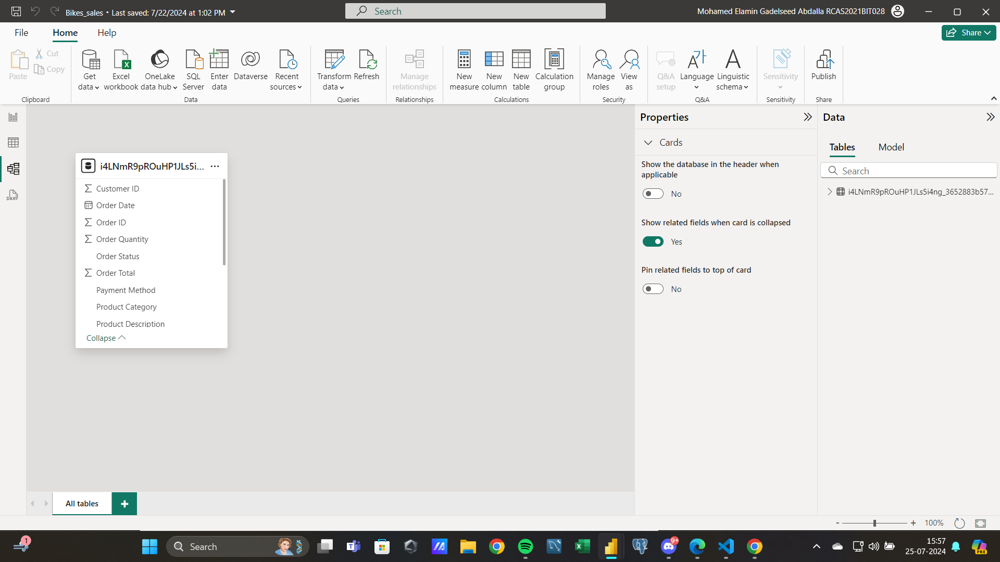

Personal Projects
1. Call Center Project
I undertook a data analysis project focusing on Call Center Data, which included various columns such as Response Time, Call Score, Customer Name, and more. The goal of this project was to analyze the data to derive insights that could be translated into actionable decisions, ultimately aiding the organization in elevating its performance and achieving a higher level of operational efficiency.


Skills Used
- Excel
- SQL
2. Coffee Sales Shop
I worked on a Coffee Sales Dataset project, which comprised three sheets containing various columns such as prices, categories, coffee types, and customer names. The objective of this project was to find solutions to help stakeholders create effective advertisements that could increase sales and attract new customers. I developed an advertisement plan that the stakeholders approved, and after implementing it for about a month, they observed a significant improvement in sales.
 





Skills Used
- Excel
- SQL
3. Cognifyz Technology
During my tenure at Cognifyz Technology Company, I independently worked on a one-month project assigned by the stakeholders. The objective was to drive improvements in the stock industry. This extensive project involved analyzing a large dataset, creating numerous visualizations, and deriving actionable insights to aid the company's decision-making process. I utilized SQL for ETL processes and Excel for data analysis, ultimately delivering valuable solutions to enhance the company's performance in the stock industry.
Skills Used
- Excel
- SQL
4. HR Employee Distribution Project
I worked on a project involving an HR Dataset, which contained information on names, race, departments, and hiring dates. Using tools like SQL and Power BI, I conducted various analyses to uncover insights aimed at improving the organization. Additionally, I addressed stakeholders' questions and provided ideas and solutions that could be transformed into actionable decisions, ultimately enhancing the organization's HR strategies.


Skills Used
- Power BI
- SQL
5. Bike Sales Project
I worked on a Bikes Sales Dataset project, which encompassed a wide range of data including bike categories and customer names. I used Excel for exploratory analysis, but primarily relied on Power BI for data cleaning, transformation, and visualization. This approach enabled me to derive valuable insights to help optimize sales strategies.

 

Skills Used
- Power BI
- Excel